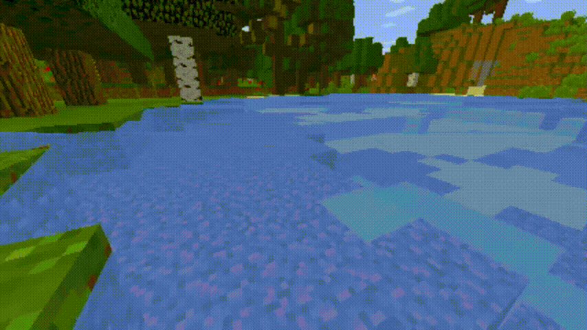
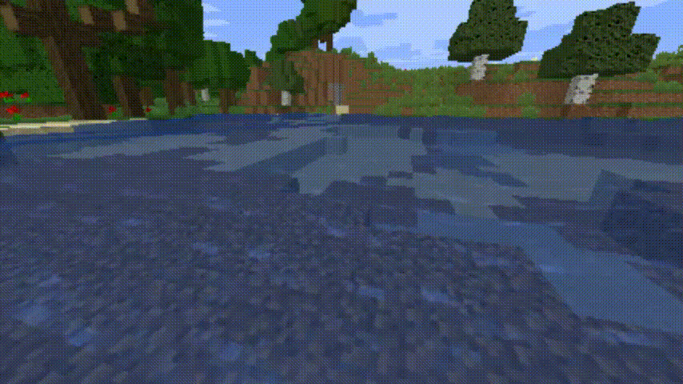
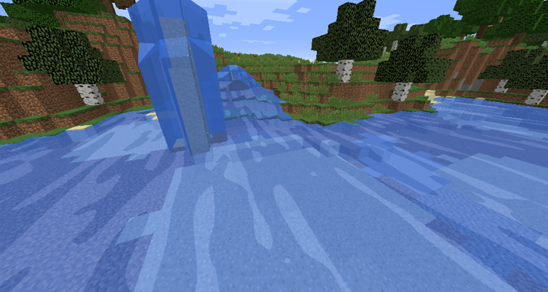

Abstract
This project focused on creating a lightweight OpenGLSL shader compatible with the Optifine Mod for Minecraft 1.14, specifically for the water component of the game. It involved using wave calculation algorithms as well as bump mapping and Blinn-Phong shading techniques. While it turned out much more difficult than expected, it was a fun and rewarding project, as we got to see our efforts rendered within a very popular game and learn a lot about shader languages.
Technical Approach
Because many pre-existing shader packs for Minecraft are essentially complete, we realized it would make more sense to develop our pipeline from scratch for this project. Our approach for this project thus began with a multitude of Youtube OpenGLSL shader tutorial videos, one series by Continuum Graphics in particular which we followed to create our files. Once we were able to successfully integrate our files with the Optifine Mod to run within Minecraft, we experimented with playing with the textures and colors to familiarize ourselves with the different variables defaulted in Optifine/Minecraft. This turned out to be much more complicated than we thought and took some time to grasp, even with the help of the official Optifine Minecraft shaders Github repository. During this time of familiarization, we used interpolation of colors and shading to figure out our initial step to making the water in Minecraft look nicer.
Realizing that waves within the vertex shader would be much easier to implement than anything in the fragment shader, we used a Khan Academy video (linked in “References” below) on wave equations to implement the sine wave functions. This allowed us to create our waves as a function of the x-coordinate, z-coordinate, and time. Our wave equations also allowed us to adjust the amplitude as well as the velocity of the wave through the period and the distance between two peaks. Our resulting waves can be seen in the Final Results section below.
For Blinn-Phong shading, some terms were not as easy to calculate without writing extensive code. For example, we needed to calculate the irradiance term, but this relied on writing out the whole lighting model. To tackle this problem, we used an estimate of the sun irradiance as a shortcut to be able to calculate the shading quickly. Although imperfect, this turned out to be a shortcut that in fact reduces the runtime of the code with the sacrifice of accuracy. The Blinn-Phong model used was directly derived from lecture slides and Project 4. The normal value used for our Blinn-Phong shading was derived from the bump mapping normal, which we also incorporated from Project 4. These normals used the wave height that we calculated within the vertex shader, mentioned above. Once our shading functions worked, it was a matter of mixing the correct values with each other (we did not realize order mattered for the mix() function of GLSL and that stumped us for a bit), and tweaking the mixing proportions to our aesthetic preferences.
Some challenges that we encountered involved the documentation around the Minecraft codebase. It was difficult to figure out which variables were available to us and what each variable actually represents. For example, we had to use the variable gl_MultiTexCoord0 to find the texture coordinates used for our shader program, but there was nowhere we could find this variable definition besides looking at Youtube tutorials or existing shaders. In addition, even when we had equations for Blinn-Phong shading, it was unsure to us if we could easily find necessary terms like the sun position. To get through this obstacle, we looked at existing shader packs to find these variable names and many different Youtube videos to figure this out.
Another challenge that we faced was how difficult it was to debug our shader code. Whenever we made one small syntax error in our shader code, Minecraft only showed us one error message: “[Shaders] Error: Invalid program ‘gbuffers_water’”. There was no easier way that we could find the specific line number of where the code breaks, and GLSL linters in our editors didn’t happen to work for any of us. This took up a good amount of our time as it was our first time coding in this kind of environment. We didn’t have a clear cut solution to line-by-line debugging this except for being more careful with our code.
One other small issue that we continuously ran into was the lack of graphics power in our computers. Whenever we tried to run our shader code, our computers were often unable to multitask with other programs, and Minecraft itself became very laggy and the FPS was very low.
We learned several things from this project. The first thing that we learned is that even though scientific papers are full of a lot of good technical information, in reality they may be difficult to implement. In our case, our implementation was severely handicapped by the pipeline we were working with. Initially, we thought that reflection and refraction would be the easiest things to implement and waves would be the hardest thing to implement; reflection and refraction were concepts taught in class that we were all very clear on, and we implemented a reflective surface with a shader file for our last assignment. However, after we started working with the Minecraft Shader coding environment, we realized this wasn’t the case. The papers we were looking at were using ray tracing to do reflection and refraction, and ray tracing wasn’t part of the pipeline we were working with. In our assignment 4, we reflect by sampling from an environment map using the incoming direction wi, but Minecraft doesn't provide a cubemap as it’s real-time rendering. We thought waves would be more difficult to implement because we had never seen the equations before, and they seemed rather esoteric to us. However, with a little time they proved to be easy to digest, and the implementation was smooth, as we had all the variables provided to us in the vertex shader file.
Another thing we learned was how to approach a project that doesn’t have much documentation. In the beginning we tried to watch tutorial videos on Minecraft shaders, but since there weren’t any tutorials specifically on water shading, they ended up not being what we were looking for; unbeknownst to us at the time, the water shader files in Minecraft have specific variables we needed to access, and these videos didn’t talk about any of them. We ended up looking at Minecraft water shaders built by other people and this proved to be the most helpful approach to give us the necessary knowledge of this mysterious Minecraft shader environment. We learned that when working in a poorly documented code environment, looking at existing code to get an idea of what variables are available to you (e.g. the sun position, the current time, the tint of water) is not a bad way to go.
Final Results
|

|

|
|

|

|
References Used
Continuum Graphics' OpenGLSL Tutorial SeriesAdvanced C++ OpenGLSL Shader Tutorial
Realistic Water using Bump Mapping and Refraction
Effective Water Simulation from Physical Models
Khan Academy Wave Equation
Optifine Mod Minecraft Shaders Documentation
Team Contributions
Cynthia:
Write-up of Proposal, Milestone, and Final reports
Testing code on Minecraft application
Set up frameworks for project Github Pages and content outlines, as well as powerpoint presentation reports
Research of topic/documentation
Implementation of Blinn-Phong shading with bump mapping in fragment shader
Chris:
Write-up of Proposal, Milestone, and Final reports
Testing code on Minecraft application
General research of topic/documentation, helpful Minecraft Discord surveyor
Research and implementation of wave calculations in vertex shader
Voice-over for project videos
Sungho:
Write-up of Proposal, Milestone, and Final reports
Testing code on Minecraft application
Research and initial development of Minecraft-specific GLSL pipeline, and functions of various .vsh/.fsh files.
Figure out initial water shading with texture and color
Kept the team on track with message check-ins, initiation of video calls and keeping side conversations in check.